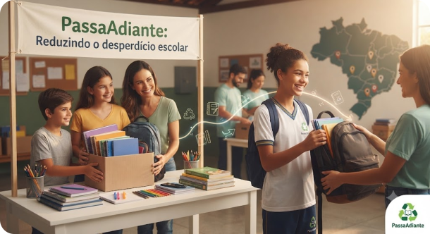

Sobre o projeto

PassaAdiante surgiu como trabalho acadêmico e rapidamente revelou seu potencial transformador. Identificamos que muitos estudantes abandonam o ensino por falta de materiais básicos, enquanto esses mesmos itens são descartados por famílias que não precisam mais deles.
Nossa ambição é reduzir o desperdício escolar no Brasil, conectando quem tem o que doar a quem mais precisa.
Garantir que a falta de materiais nunca seja motivo para um estudante abandonar a escola.
Cada item doado evita que mais plástico e papel acabem no lixo, prolongando seu ciclo de vida.
Comunidades inteiras se mobilizam quando percebem que pequenas ações geram grandes mudanças.
Inserimos materiais escolares em um ciclo contínuo de uso, doação e reaproveitamento responsável.
Quem faz o Passa Adiante
Somos a equipe Anteiku, do Polo Caucaia, desenvolvendo este projeto na disciplina de Desenvolvimento para Web da UFCA.
- Holivane Holanda
- Rodrigo Bezerra
- Sara Ferreira